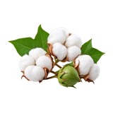

होम / देशी कपास

देशी कपास का भाव आज | Desi Cotton Mandi Price Today
देशी कपास का भाव आज जानना किसानों और व्यापारियों के लिए ज़रूरी है। इस पेज पर राजकोट, अमरेली, गोंडल और जोधपुर जैसी उपलब्ध मंडियों में देशी कपास के न्यूनतम, मॉडल और अधिकतम भाव प्रति क्विंटल में देखें। गुणवत्ता, आवक और नज़दीकी मंडियों की तुलना से बेहतर फैसला लिया जा सकता है।
Check available Desi Cotton mandi prices before you sell. Compare minimum, modal and maximum rates with quality, arrivals and nearby market records.
देशी कपास का भाव कैसे देखें और रेट किन बातों से बदलता है
देशी कपास का भाव नरमा से अलग देखा जाता है। इसकी स्थानीय किस्म, lot की गुणवत्ता और बाजार की खरीद के अनुसार मंडी भाव में फर्क आ सकता है।
आज का देशी कपास भाव कैसे देखें
इस पेज की मंडी-वार तालिका में न्यूनतम, मॉडल और अधिकतम भाव देखें। अपनी नज़दीकी मंडी तथा उपलब्ध दूसरी मंडियों के भाव की तुलना करके फैसला लेना अधिक उपयोगी रहता है।
- अपनी मंडी या राज्य चुनकर भाव देखें।
- न्यूनतम, मॉडल और अधिकतम भाव में अंतर समझें।
- पुराने और नए उपलब्ध रिकॉर्ड में फर्क देखकर निर्णय लें।
गुणवत्ता और ग्रेड का असर
देशी कपास में नमी, साफ-सफाई, कचरे की मात्रा और रेशे की स्थिति पर खरीदार ध्यान देते हैं। एक ही मंडी में अलग lot को अलग बोली मिलना सामान्य है।
आवक, मांग और बाजार
जिनिंग इकाइयों की खरीद, स्थानीय आवक, बारिश या नमी तथा कपड़ा बाजार की मांग से देशी कपास के भाव प्रभावित हो सकते हैं।
देशी कपास बेचने या खरीदने से पहले ध्यान रखें
- इसे नरमा के साथ जोड़कर भाव की तुलना न करें।
- गीले या अधिक कचरे वाले माल को अलग रखें।
- बिक्री से पहले आसपास की कपास मंडियों के भाव देखें।